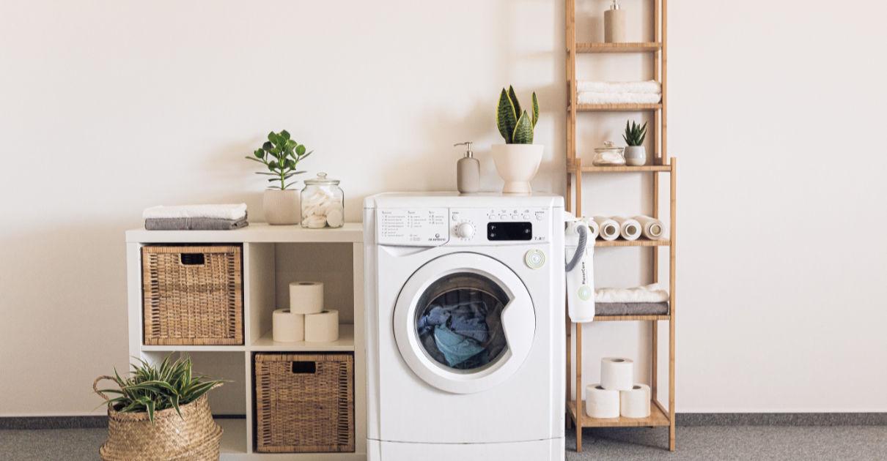
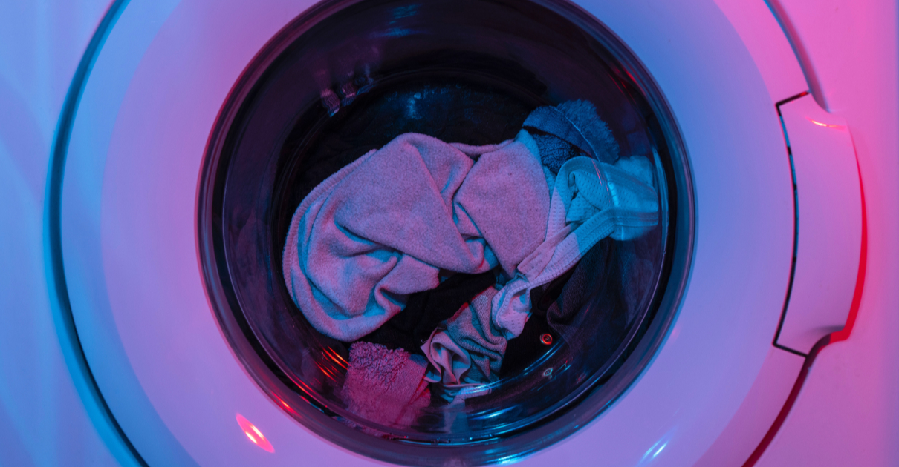

"Kleider machen Leute"
- Friedrich von Logau, Dichter
Wir bieten Ihnen die besten Leistungen und das schon für wenig Geld an. Der Bedarf an dem Wäscheservice kann sehr vielfältig sein. So können Sie Ihre private Wäsche von uns waschen lassen, aber wir haben uns auch darauf eingestellt, dass wir die Wäsche von Betrieben und auch Hotels waschen können. Wir haben die speziellen Ausrüstungen, die es uns erlaubt, alles ordnungsgemäß für Sie zu waschen und auch zu reinigen. Wir können uns auf die verschiedenen Textilarten einstellen, sodass Sie immer davon ausgehen können, dass Ihre Wäsche den Anforderungen entsprechend gereinigt wird. Egal, ob es sich um stark verschmutzte Wäsche handelt, oder ob wir Ihre Seidenblusen waschen sollen, wir sind vom Fach und wissen, wie wir Ihre Wäsche zu behandeln haben. Wir waschen alles, was Sie uns geben.
Unser Wäscheservice umfasst das Abholen, Waschen und Bügeln.
Sie möchten Ihre Wäsche abgeholt haben? Kein Problem! Geben Sie uns einfach Bescheid, und wir holen die Wäsche bei Ihnen ab. Gleich, ob in der Wäschewanne oder im großen Rollcontainer: Kein Weg ist uns zu weit, damit wir Sie zufriedenstellen können.
Unser Service beinhaltet auch, dass Sie Ihre Wäsche schnell zurück bekommen. Wir sind immer bemüht, dass wir Ihre Wäsche sehr zeitnah für Sie waschen, sodass Sie diese in den meisten Fällen auch schon innerhalb einer kurzen Zeit wieder zurückbekommen werden. In der Zeit haben wir Ihre Wäsche gesäubert und auch für Sie getrocknet. Wenn Sie es wünschen schließen wir daran auch noch das Mangeln oder das Bügeln Ihrer Wäsche an.
Wir richten uns bei unserem Service ganz nach Ihren ganz individuellen Wünschen bei unserem Wäscheservice.
Gerne erstellen wir für Sie ein unverbindliches Angebot. Nennen Sie uns einfach Ihre Wünsche. Wir werden zusammen einen Weg finden, wie wir Ihnen unseren Service anbieten können.
Wir waschen alle Ihre Wäsche, die Sie uns zur Verfügung stellen. Probieren Sie unseren Service aus, und Sie werden begeistert sein, wie Ihre Wäsche nach unserer Leistung aussieht. Zurückbleibende Flecken oder ausgewaschene Farben werden Sie bei uns nicht finden. Wir holen Ihre Wäsche ab und bringen Sie sauber und ordentlich wieder zurück.
Neben sauberer Wäsche ist es immer sehr wichtig, dass die Wäsche auch ordentlich aussieht. Hier kann das Bügeln der Wäsche dafür sorgen, dass die Wäsche gleich ganz anders aussieht. Wir bügeln oder mangeln Ihnen Ihre Wäsche.
Denn auch in dem privaten Bereich ist es heute vielen Menschen nicht mehr ausreichend möglich, dass genügend Zeit vorhanden ist, sich dieser so wichtigen Aufgabe zu widmen. Das Bügeln nimmt immer so viel Zeit in Anspruch, das gerade die Personen, die beruflich sehr eingespannt sind, und eigentlich auf die ordentlich gebügelte Wäsche angewiesen sind, dieses selber nicht mehr erledigen können. Daher bieten wir den Bügelservice für den privaten und den betrieblichen Bereich an.
Wir bieten Ihnen an, dass wir all Ihre Wäschestücke die Sie uns geben, bügeln. So können Sie mit ihrer privaten Wäsche unseren Bügelservice nutzen oder auch für Ihre Berufsbekleidung. Sie geben uns die Wäsche und wir übernehmen die mühsame Arbeit des Bügelns für Sie.
Auch dann, wenn Sie Ihre Tischwäsche bei uns abgeben, können Sie sicher sein, dass diese glatt und ordentlich wieder zu Ihnen kommen wird. Wir mangeln Ihre Tischwäsche und dabei ist es uns ganz egal, um was für Tischwäsche es sich handelt, ob sie klein ist oder in einer Übergröße vorliegt. Wir sind technisch so gut ausgestattet, dass uns kein Wäschestück Schwierigkeiten bereiten wird. Fragen Sie uns, wir können Ihnen sicherlich ein Angebot für unseren Bügelservice unterbreiten, dass Sie überzeugen kann.
Besonders wichtig ist es auch, dass die Wäsche der Gastronomiebetriebe über unseren Bügelservice hergerichtet wird. Denn eine "knubbelige" Bettwäsche oder eine Stoffserviette, die die Gäste nicht benutzen möchten, weil sie schlecht gebügelt oder gemangelt worden ist, kann schnell ein sehr negatives Bild auf Ihren Betrieb werfen. Wir haben uns darauf spezialisiert, dass wir in allen Bereichen den Bügelservice in Wien ordentlich anbieten können. Vertrauen Sie uns und Ihre Gäste werden es Ihnen danken.